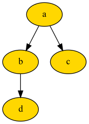
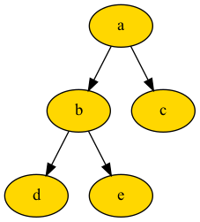
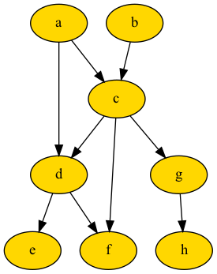

🌳 Big Tree Documentation¶


Big Tree Python Package¶
Tree Implementation for Python, integrated with Python list, dictionary, and pandas DataFrame.
It is pythonic, making it easy to learn and extendable to many types of workflows.
Related Links:
Articles
If you want to support bigtree,
Components¶
There are 2 segments to Big Tree consisting of Tree implementation and Directed Acyclic Graph (DAG) implementation.
For Tree implementation, there are 8 main components.
Node
BaseNode, extendable classNode, BaseNode with node name attribute
Constructing Tree
From list, using paths or parent-child tuples
From nested dictionary, using path or recursive structure
From pandas DataFrame, using paths or parent-child columns
Add nodes to existing tree using string
Add nodes and attributes to existing tree using dictionary or pandas DataFrame, using path
Add only attributes to existing tree using dictionary or pandas DataFrame, using node name
Traversing Tree
Pre-Order Traversal
Post-Order Traversal
Level-Order Traversal
Level-Order-Group Traversal
Modifying Tree
Shift nodes from location to destination
Copy nodes from location to destination
Copy nodes from one tree to another
Tree Search
Find multiple nodes based on name, partial path, attribute value, user-defined condition
Find single nodes based on name, path, attribute value, user-defined condition
Find multiple child nodes based on attribute value, user-defined condition
Find single child node based on name
Helper Function
Cloning tree to another
NodetypePrune tree
Get difference between two trees
Exporting Tree
Print to console
Export to dictionary, nested dictionary, or pandas DataFrame
Export tree to dot (can save to .dot, .png, .svg, .jpeg files)
Workflows
Sample workflows for tree demonstration!
For Directed Acyclic Graph (DAG) implementation, there are 4 main components.
Node
DAGNode, extendable class for constructing Directed Acyclic Graph (DAG)
Constructing DAG
From list, containing parent-child tuples
From nested dictionary
From pandas DataFrame
Traversing DAG
Generic traversal method
Exporting DAG
Export to list, dictionary, or pandas DataFrame
Export DAG to dot (can save to .dot, .png, .svg, .jpeg files)
Installation¶
To install bigtree, run the following line in command prompt:
$ pip install bigtree
If tree needs to be exported to image, it requires additional dependencies. Run the following lines in command prompt:
$ pip install 'bigtree[image]'
$ brew install gprof2dot
Tree Demonstration¶
Here are some codes to getting started.
Construct Tree¶
Nodes can have attributes if they are initialized from Node, dictionary, or pandas DataFrame.
From
Node
Nodes can be linked to each other with parent and children setter methods,
or using bitshift operator with the convention parent_node >> child_node or child_node << parent_node.
from bigtree import Node, print_tree, tree_to_dot
root = Node("a", age=90)
b = Node("b", age=65)
c = Node("c", age=60)
d = Node("d", age=40)
root.children = [b, c]
d.parent = b
print_tree(root, attr_list=["age"])
# a [age=90]
# ├── b [age=65]
# │ └── d [age=40]
# └── c [age=60]
graph = tree_to_dot(root, node_colour="gold")
graph.write_png("assets/tree.png")

from bigtree import Node, print_tree
root = Node("a", age=90)
b = Node("b", age=65)
c = Node("c", age=60)
d = Node("d", age=40)
root >> b
root >> c
d << b
print_tree(root, attr_list=["age"])
# a [age=90]
# ├── b [age=65]
# │ └── d [age=40]
# └── c [age=60]
Alternatively, we can directly pass parent or children argument.
from bigtree import Node, print_tree
root = Node("a")
b = Node("b", parent=root)
c = Node("c", parent=root)
d = Node("d", parent=b)
print_tree(root, style="ascii")
# a
# |-- b
# | +-- d
# +-- c
from bigtree import Node, print_tree
d = Node("d")
c = Node("c")
b = Node("b", children=[d])
root = Node("a", children=[b, c])
print_tree(root, style="ascii")
# a
# |-- b
# | +-- d
# +-- c
From list
Construct nodes only, list can contain either full paths or tuples of parent-child names.
from bigtree import list_to_tree, list_to_tree_by_relation, print_tree
root = list_to_tree(["a/b/d", "a/c"])
print_tree(root)
# a
# ├── b
# │ └── d
# └── c
root = list_to_tree_by_relation([("a", "b"), ("a", "c"), ("b", "d")])
print_tree(root)
# a
# ├── b
# │ └── d
# └── c
From nested dictionary
Construct nodes with attributes, key: path, value: dict of node attribute names and attribute values.
from bigtree import dict_to_tree, print_tree
path_dict = {
"a": {"age": 90},
"a/b": {"age": 65},
"a/c": {"age": 60},
"a/b/d": {"age": 40},
}
root = dict_to_tree(path_dict)
print_tree(root, attr_list=["age"])
# a [age=90]
# ├── b [age=65]
# │ └── d [age=40]
# └── c [age=60]
From nested recursive dictionary
Construct nodes with attributes, key: node attribute names, value: node attribute values, and list of
children (recursive).
from bigtree import nested_dict_to_tree, print_tree
path_dict = {
"name": "a",
"age": 90,
"children": [
{
"name": "b",
"age": 65,
"children": [
{"name": "d", "age": 40},
],
},
{"name": "c", "age": 60},
],
}
root = nested_dict_to_tree(path_dict)
print_tree(root, attr_list=["age"])
# a [age=90]
# ├── b [age=65]
# │ └── d [age=40]
# └── c [age=60]
From pandas DataFrame
Construct nodes with attributes, pandas DataFrame can contain either path column or parent-child columns, and attribute columns.
import pandas as pd
from bigtree import dataframe_to_tree, dataframe_to_tree_by_relation, print_tree
data = pd.DataFrame(
[
["a", 90],
["a/b", 65],
["a/c", 60],
["a/b/d", 40],
],
columns=["path", "age"],
)
root = dataframe_to_tree(data)
print_tree(root, attr_list=["age"])
# a [age=90]
# ├── b [age=65]
# │ └── d [age=40]
# └── c [age=60]
data = pd.DataFrame(
[
["a", None, 90],
["b", "a", 65],
["c", "a", 60],
["d", "b", 40],
],
columns=["child", "parent", "age"],
)
root = dataframe_to_tree_by_relation(data)
print_tree(root, attr_list=["age"])
# a [age=90]
# ├── b [age=65]
# │ └── d [age=40]
# └── c [age=60]
If tree is already created, attributes can still be added using dictionary or pandas DataFrame!
Print Tree¶
After tree is constructed, it can be viewed by printing to console using print_tree method.
from bigtree import Node, print_tree
root = Node("a", age=90)
b = Node("b", age=65, parent=root)
c = Node("c", age=60, parent=root)
d = Node("d", age=40, parent=b)
e = Node("e", age=35, parent=b)
print_tree(root)
# a
# ├── b
# │ ├── d
# │ └── e
# └── c
# Print sub-tree
print_tree(root, node_name_or_path="b")
# b
# ├── d
# └── e
print_tree(root, max_depth=2)
# a
# ├── b
# └── c
# Print attributes
print_tree(root, attr_list=["age"])
# a [age=90]
# ├── b [age=65]
# │ ├── d [age=40]
# │ └── e [age=35]
# └── c [age=60]
print_tree(root, attr_list=["age"], attr_bracket_open="*(", attr_bracket_close=")")
# a *(age=90)
# ├── b *(age=65)
# │ ├── d *(age=40)
# │ └── e *(age=35)
# └── c *(age=60)
# Available styles
print_tree(root, style="ansi")
# a
# |-- b
# | |-- d
# | `-- e
# `-- c
print_tree(root, style="ascii")
# a
# |-- b
# | |-- d
# | +-- e
# +-- c
print_tree(root, style="const")
# a
# ├── b
# │ ├── d
# │ └── e
# └── c
print_tree(root, style="const_bold")
# a
# ┣━━ b
# ┃ ┣━━ d
# ┃ ┗━━ e
# ┗━━ c
print_tree(root, style="rounded")
# a
# ├── b
# │ ├── d
# │ ╰── e
# ╰── c
print_tree(root, style="double")
# a
# ╠══ b
# ║ ╠══ d
# ║ ╚══ e
# ╚══ c
print_tree(
root, style="custom",
style_stem="| ", style_branch="|-- ", style_stem_final="+-- "
)
# a
# |-- b
# | |-- d
# | +-- e
# +-- c
Modify Tree¶
Nodes can be shifted or copied from one path to another.
from bigtree import Node, shift_nodes, print_tree
root = Node("a")
b = Node("b", parent=root)
c = Node("c", parent=root)
d = Node("d", parent=root)
print_tree(root)
# a
# ├── b
# ├── c
# └── d
shift_nodes(
tree=root,
from_paths=["a/c", "a/d"],
to_paths=["a/b/c", "a/dummy/d"],
)
print_tree(root)
# a
# ├── b
# │ └── c
# └── dummy
# └── d
from bigtree import Node, copy_nodes, print_tree
root = Node("a")
b = Node("b", parent=root)
c = Node("c", parent=root)
d = Node("d", parent=root)
print_tree(root)
# a
# ├── b
# ├── c
# └── d
copy_nodes(
tree=root,
from_paths=["a/c", "a/d"],
to_paths=["a/b/c", "a/dummy/d"],
)
print_tree(root)
# a
# ├── b
# │ └── c
# ├── c
# ├── d
# └── dummy
# └── d
Nodes can also be copied between two different trees.
from bigtree import Node, copy_nodes_from_tree_to_tree, print_tree
root = Node("a")
b = Node("b", parent=root)
c = Node("c", parent=root)
d = Node("d", parent=root)
print_tree(root)
# a
# ├── b
# ├── c
# └── d
root_other = Node("aa")
copy_nodes_from_tree_to_tree(
from_tree=root,
to_tree=root_other,
from_paths=["a/b", "a/c", "a/d"],
to_paths=["aa/b", "aa/b/c", "aa/dummy/d"],
)
print_tree(root_other)
# aa
# ├── b
# │ └── c
# └── dummy
# └── d
Tree Search¶
One or multiple nodes can be search based on name, path, attribute value, or user-defined condition.
To find a single node,
from bigtree import Node, print_tree, find, find_name, find_path, find_full_path, find_attr
root = Node("a", age=90)
b = Node("b", age=65, parent=root)
c = Node("c", age=60, parent=root)
d = Node("d", age=40, parent=c)
print_tree(root, attr_list=["age"])
# a [age=90]
# ├── b [age=65]
# └── c [age=60]
# └── d [age=40]
find(root, lambda node: node.age == 60)
# Node(/a/c, age=60)
find_name(root, "d")
# Node(/a/c/d, age=40)
find_path(root, "/c/d") # partial path
# Node(/a/c/d, age=40)
find_full_path(root, "a/c/d") # full path
# Node(/a/c/d, age=40)
find_attr(root, "age", 40)
# Node(/a/c/d, age=40)
To find multiple nodes,
from bigtree import Node, print_tree, findall, find_names, find_paths, find_attrs
root = Node("a", age=90)
b = Node("b", age=65, parent=root)
c = Node("c", age=65, parent=root)
d = Node("c", age=40, parent=c)
print_tree(root, attr_list=["age"])
# a [age=90]
# ├── b [age=65]
# └── c [age=65]
# └── c [age=40]
findall(root, lambda node: node.age == 65)
# (Node(/a/b, age=65), Node(/a/c, age=65))
find_names(root, "c")
# (Node(/a/c, age=65), Node(/a/c/c, age=40))
find_paths(root, "/c") # partial path
# (Node(/a/c, age=65), Node(/a/c/c, age=40))
find_attrs(root, "age", 40)
# (Node(/a/c/c, age=40),)
Helper Utility¶
There following are helper functions for cloning tree to another Node type, pruning tree, and getting difference
between two trees.
from bigtree import BaseNode, Node, print_tree, clone_tree, prune_tree, get_tree_diff
# Cloning tree from `BaseNode` to `Node` type
root = BaseNode(name="a")
b = BaseNode(name="b", parent=root)
clone_tree(root, Node)
# Node(/a, )
# Prune tree to only path a/b
root = Node("a")
b = Node("b", parent=root)
c = Node("c", parent=root)
print_tree(root)
# a
# ├── b
# └── c
root_pruned = prune_tree(root, "a/b")
print_tree(root_pruned)
# a
# └── b
# Get difference between two trees
root = Node("a")
b = Node("b", parent=root)
c = Node("c", parent=root)
print_tree(root)
# a
# ├── b
# └── c
root_other = Node("a")
b_other = Node("b", parent=root_other)
print_tree(root_other)
# a
# └── b
tree_diff = get_tree_diff(root, root_other)
print_tree(tree_diff)
# a
# └── c (-)
Export Tree¶
Tree can be exported to another data type.
Export to nested dictionary
Export to nested recursive dictionary
Export to pandas DataFrame
Export to dot (and png)
from bigtree import Node, print_tree, tree_to_dict, tree_to_nested_dict, tree_to_dataframe, tree_to_dot
root = Node("a", age=90)
b = Node("b", age=65, parent=root)
c = Node("c", age=60, parent=root)
d = Node("d", age=40, parent=b)
e = Node("e", age=35, parent=b)
print_tree(root)
# a
# ├── b
# │ ├── d
# │ └── e
# └── c
tree_to_dict(
root,
name_key="name",
parent_key="parent",
attr_dict={"age": "person age"}
)
# {
# '/a': {'name': 'a', 'parent': None, 'person age': 90},
# '/a/b': {'name': 'b', 'parent': 'a', 'person age': 65},
# '/a/b/d': {'name': 'd', 'parent': 'b', 'person age': 40},
# '/a/b/e': {'name': 'e', 'parent': 'b', 'person age': 35},
# '/a/c': {'name': 'c', 'parent': 'a', 'person age': 60}
# }
tree_to_nested_dict(root, all_attrs=True)
# {
# 'name': 'a',
# 'age': 90,
# 'children': [
# {
# 'name': 'b',
# 'age': 65,
# 'children': [
# {
# 'name': 'd',
# 'age': 40
# },
# {
# 'name': 'e',
# 'age': 35
# }
# ]
# },
# {
# 'name': 'c',
# 'age': 60
# }
# ]
# }
tree_to_dataframe(
root,
name_col="name",
parent_col="parent",
path_col="path",
attr_dict={"age": "person age"}
)
# path name parent person age
# 0 /a a None 90
# 1 /a/b b a 65
# 2 /a/b/d d b 40
# 3 /a/b/e e b 35
# 4 /a/c c a 60
graph = tree_to_dot(root, node_colour="gold")
graph.write_png("assets/demo.png")

DAG Demonstration¶
Compared to nodes in tree, nodes in DAG are able to have multiple parents.
Construct DAG¶
From
DAGNode
DAGNode can be linked to each other with parents and children setter methods,
or using bitshift operator with the convention parent_node >> child_node or child_node << parent_node.
from bigtree import DAGNode, dag_to_dot
a = DAGNode("a")
b = DAGNode("b")
c = DAGNode("c", parents=[a, b])
d = DAGNode("d", parents=[a, c])
e = DAGNode("e", parents=[d])
f = DAGNode("f", parents=[c, d])
h = DAGNode("h")
g = DAGNode("g", parents=[c], children=[h])
graph = dag_to_dot(a, node_colour="gold")
graph.write_png("assets/demo_dag.png")

From list
Construct nodes only, list contains parent-child tuples.
from bigtree import list_to_dag, dag_iterator
relations_list = [
("a", "c"),
("a", "d"),
("b", "c"),
("c", "d"),
("d", "e")
]
dag = list_to_dag(relations_list)
print([(parent.node_name, child.node_name) for parent, child in dag_iterator(dag)])
# [('a', 'd'), ('c', 'd'), ('d', 'e'), ('a', 'c'), ('b', 'c')]
From nested dictionary
Construct nodes with attributes, key: child name, value: dict of parent name, child node attributes.
from bigtree import dict_to_dag, dag_iterator
relation_dict = {
"a": {"step": 1},
"b": {"step": 1},
"c": {"parent": ["a", "b"], "step": 2},
"d": {"parent": ["a", "c"], "step": 2},
"e": {"parent": ["d"], "step": 3},
}
dag = dict_to_dag(relation_dict, parent_key="parent")
print([(parent.node_name, child.node_name) for parent, child in dag_iterator(dag)])
# [('a', 'd'), ('c', 'd'), ('d', 'e'), ('a', 'c'), ('b', 'c')]
From pandas DataFrame
Construct nodes with attributes, pandas DataFrame contains child column, parent column, and attribute columns.
import pandas as pd
from bigtree import dataframe_to_dag, dag_iterator
path_data = pd.DataFrame([
["a", None, 1],
["b", None, 1],
["c", "a", 2],
["c", "b", 2],
["d", "a", 2],
["d", "c", 2],
["e", "d", 3],
],
columns=["child", "parent", "step"]
)
dag = dataframe_to_dag(path_data)
print([(parent.node_name, child.node_name) for parent, child in dag_iterator(dag)])
# [('a', 'd'), ('c', 'd'), ('d', 'e'), ('a', 'c'), ('b', 'c')]
Demo Usage¶
To Do Application¶
There is existing implementation of a To-Do app to showcase how bigtree can be used. There are functions to:
Add or remove list to To-Do application
Add or remove item to list, default list is the 'General' list
Prioritize a list/item by reordering them as first list/item
Save and import To-Do application to and from an external JSON file
Show To-Do application, which prints tree to console
from bigtree import AppToDo
app = AppToDo("To Do App")
app.add_item(item_name="Homework 1", list_name="School")
app.add_item(item_name=["Milk", "Bread"], list_name="Groceries", description="Urgent")
app.add_item(item_name="Cook")
app.show()
# To Do App
# ├── School
# │ └── Homework 1
# ├── Groceries
# │ ├── Milk [description=Urgent]
# │ └── Bread [description=Urgent]
# └── General
# └── Cook
app.save("list.json")
app2 = AppToDo.load("list.json")